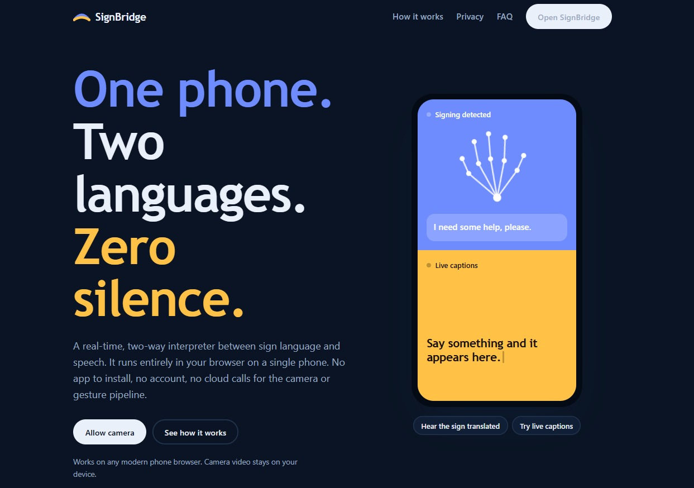
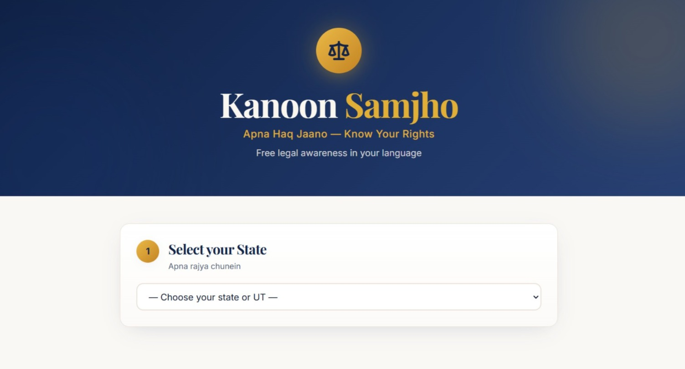

Welcome to My Portfolio
Nishil Belekar
First year student at NIAT x Alard University, Pune, an open-source developer and student builder obsessed with turning bold ideas into working software. From auditing Python dependencies to prototyping generative, zero-state interfaces with Gemma and Supabase, I focus on clean architecture and rapid execution.
About Me
I’m Nishil, a CS undergrad at NIAT x ALARD University (Pune) who enjoys living at the intersection of deep technical tooling, experimental AI, and real-world execution. Whether I’m auditing dependency trees in Python, diving into vulnerability scanners like Intel’s cve-bin-tool, or building zero-state generative UI prototypes like NullState with Gemma and Supabase, I’m driven by a simple question: how can we make software cleaner, faster, and smarter? Outside of building and contributing to open source, you’ll usually find me on the ground organizing campus initiatives, pitching startup concepts, or working with student governance to bring ideas to life. From leading student councils to shipping hackathon builds under tight deadlines, I thrive in fast-moving environments where ownership and teamwork matter.
Skills
Projects

A real-time, two-way sign language interpreter that runs entirely in the
browser — no server, no account, no cloud calls for the core pipeline.

Understand the Law. Free legal awareness for every Indian.
Awareness audio and visual content through an n8n webhook and renders.
Contact
👤 Nishil Belekar
✉️ Nishil2008@outlook.com
📍 Hinjewadi, Pune